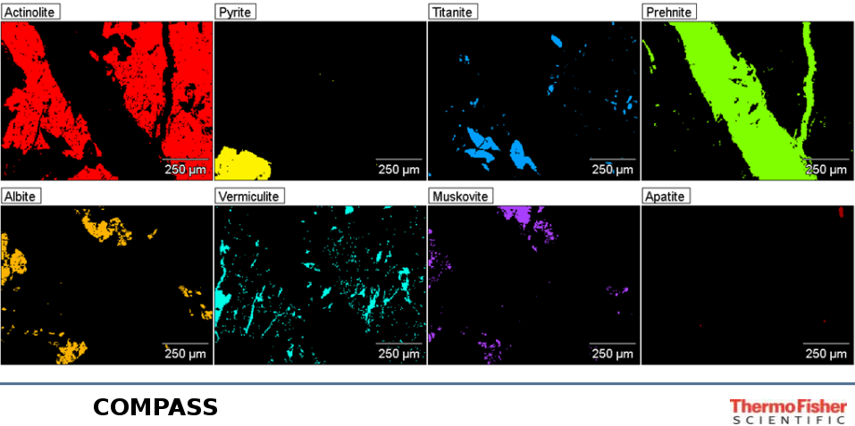

<!DOCTYPE html>
<html lang="en">
  <head>
    <meta charset="utf-8" />
    <meta name="viewport" content="width=device-width, initial-scale=1.0, maximum-scale=1.0, user-scalable=no" />

    <title>Electron Microscopy in the Age of “Big Data”</title>
    <link rel="stylesheet" href="./css/reveal.css" />
    <link rel="stylesheet" href="./_assets/nist.css" id="theme" />
    <link rel="stylesheet" href="./css/highlight/zenburn.css" />
    <link rel="stylesheet" href="./css/print/paper.css" type="text/css" media="print" />

  </head>
  <body>
    <div class="reveal">
      <div class="slides"><section  data-markdown><script type="text/template">

<!-- .slide: data-state="title" -->

# Electron Microscopy in the Age of <br/> “*Big Data*”

&nbsp;

#### CCEM Summer School on Electron Microscopy <!-- .element: style="text-align: left;"-->

#### June 5, 2019 - Hamilton, ON <!-- .element: style="color: #a9a9a9; text-align: left;"-->

Joshua Taillon <!-- .element: class="author"-->

joshua.taillon@nist.gov <!-- .element: class="contact"-->

<aside class="notes"><ul>
<li>Thanks very much for the introduction</li>
<li>I was asked to talk about &quot;statistical analysis in EM&quot;<ul>
<li>title seemed a bit drab, and everyone loves &quot;big data&quot;</li>
</ul>
</li>
<li>This talk could also be called &quot;an introduction to computational microscopy&quot;</li>
</ul>
</aside></script></section><section  data-markdown><script type="text/template">

<!-- .slide: class="disclaimer" -->

## NIST Disclaimer

*Certain commercial equipment, instruments, materials, vendors, 
and software are identified in this talk for example purposes and to
foster understanding. Such identification does not imply 
recommendation or endorsement by the National Institute of Standards 
and Technology, nor does it imply that the materials or equipment
identified are necessarily the best available for the purpose.*

</script></section><section ><section data-markdown><script type="text/template">

## A Brief Introduction

- Materials scientist by training

- Background in materials characterization 
  - TEM, FIB/SEM, EDS/EELS, etc. 

- Stumbled into the world of "advanced" data analysis during my Ph.D. and fell down the rabbit hole 
  - Not a full-time researcher; not IT; not a developer  
  - Somewhere on the spectrum of researcher $\leftrightarrow$ data scientist 
  - Active contributor to HyperSpy

- NIST Office of Data and Informatics <!-- .element: class="fragment" data-fragment-index="1" -->
  - <!-- .element: class="fragment" data-fragment-index="1" --> Not *actually* a microscopist...

<!-- .slide: data-transition="none" -->
</script></section><section data-markdown><script type="text/template">
<!-- .slide: data-transition="none" -->

## About NIST

<div class="two-cols">
<div class="col">
  
  <div style="font-style: italic; color: #4a4a4a; font-size: x-large;">
    Gaithersburg, MD
  </div>
</div>
<div class="col">
  
  <div style="font-style: italic; color: #4a4a4a; font-size: x-large;">
    Boulder, CO
  </div>
</div>
</div>

<aside class="notes"><ul>
<li>Physical sciences and standards laboratory<ul>
<li>Government, but non-regulatory agency</li>
<li>We are the U.S. standards org, so if you&#39;ve ever checked what time it is - you&#39;re welcome</li>
<li>We also do a great deal of basic science research with the mission to promote innovation and industrial competitiveness</li>
</ul>
</li>
<li>About 6,000 staff including postdocs and guests - many electron microscopists (10 - 15 TEMs)</li>
<li>Two campuses, differ mostly in the color of the sky</li>
</ul>
<!-- .slide: data-transition="none" --></aside></script></section><section data-markdown><script type="text/template">
<!-- .slide: data-transition="none" -->

## Office of Data and Informatics
<!-- .slide: class="text_right_im_left" -->

 <!-- .element: class="plain vertical-center" style="left:5%; width:30%" -->

<ul style="font-size:0.8em;">
  <li>Provides data expertise and resources to NIST researchers</li>
  <li>Develops best practices to optimize FAIR data products</li>
  <li>Supports research into advanced manipulation, visualization, and analysis of large data sets</li>
</ul>

<aside class="notes"><ul>
<li>I come to you from ODI, which is a group within MML<ul>
<li>we help researchers optimize the discoverability, usability, and
interoperability of their data  </li>
<li>We foster collaboration and coordination with<br>domain experts and other data specialists at NIST</li>
<li>We support development of research programs where advanced 
manipulation, visualization, and analysis of large data sets are 
needed to advance knowledge</li>
</ul>
</li>
</ul>
</aside></script></section></section><section  data-markdown><script type="text/template">

## Making EM data FAIR

<!-- .slide: class="one_image" -->

<a href="https://en.wikipedia.org/wiki/FAIR_data" target="_blank"></a>
<div class="fig-caption" style="bottom:20%;">
<span style="font-style:normal;">Wilkinson</span> et al., Scientific Data<span style="font-style:normal;">, **3**, 160018, 2016</span> ([link](https://doi.org/10.1038/sdata.2016.18))
<br/>
Image: Sangya Pundir - <a href="https://commons.wikimedia.org/wiki/File:FAIR_data_principles.jpg">CC-BY-SA 4.0</a></div>

<aside class="notes"><ul>
<li>I was hired to work with our electron microscopists to promote FAIR data<ul>
<li>Findable, Accessible, Interoperable, and Reusable</li>
<li>Movement within the open science community</li>
</ul>
</li>
<li>part of this is efforts such as my being here, that is promoting reproducable analyses</li>
<li>Another push is in metadata curation and consensus-building in the community related to metadata schemas and data descriptors</li>
</ul>
</aside></script></section><section  data-markdown><script type="text/template">

## A dream for EM data publication
<!-- .slide: class="medium_list" -->

- Publishing data, workflow, and results as one package

- <!-- .element: class="fragment" data-fragment-index="1" --> LIGO Gravitational Wave detection [notebooks](https://www.gw-openscience.org/GW170104data/LOSC_Event_tutorial_GW170104.html) 
  - <!-- .element: class="fragment" data-fragment-index="1" --> If Nobel Prize winners can do it, we can too! 

- Publishing includes a workflow along with results <!-- .element: class="fragment" data-fragment-index="2" -->
  - Trying to reproduce others’ implementations is a waste of scientific (and financial) capital <!-- .element: class="fragment" data-fragment-index="2" -->
  - A “journal article” should be able to be downloaded and the analysis reproduced<!-- .element: class="fragment" data-fragment-index="2" -->
  - Like a supercharged “Methods” section<!-- .element: class="fragment" data-fragment-index="2" -->

<aside class="notes"><ul>
<li><p>I have one last soapbox slide about something I like to bring up whenever I talk to microscopists, because I think our field is quite a bit behind some others in this regard</p>
<ul>
<li>That is I hope we can reach a point in the EM community where 
it becomes common practice to publish not just a result, but making 
a full analysis workflow and the data available at the time of 
publication </li>
</ul>
</li>
<li><p>I look for inspiration to the team behind the discovery of GW (won Nobel Prize in Physics in 2017). They publish all their data publically, together with notebooks that describe how they generated their figures and reached the conclusions they did</p>
</li>
<li><p>We&#39;ve all spent time during PhD&#39;s or even now trying to reproduce methods from papers that leave out the critical implementation</p>
</li>
<li><p>scientific productivity would increase greatly if there was more sharing in this regard (things are improving)</p>
</li>
</ul>
</aside></script></section><section  data-markdown><script type="text/template">

## High-level Outline

- <!-- .element: class="fragment" data-fragment-index="1" --> What is *computational microscopy*?

- <!-- .element: class="fragment" data-fragment-index="2" --> Real-world examples of "big data" analysis in EM

- The advent of open tools <!-- .element: class="fragment" data-fragment-index="3" -->
  - <!-- .element: class="fragment" data-fragment-index="3" --> *Now you can get the same result as your neighbor!*

- <!-- .element: class="fragment" data-fragment-index="4" --> Deeper dive into "signal separation"
  - <!-- .element: class="fragment" data-fragment-index="4" --> Methods, examples, *gotchas*, etc.

<aside class="notes"><ul>
<li>Ok, I will get off my soapbox and get into the real content...</li>
<li>This is meant to be a fairly high-level talk more to expose you to what&#39;s out there and point you towards some resources to help<ul>
<li>Slides full of math tend not to go over well prior to 9 AM</li>
</ul>
</li>
</ul>
</aside></script></section><section  data-markdown><script type="text/template">

<!-- .slide: class="section_header" data-background="#303c6b"-->
## What is *computational microscopy*?

</script></section><section ><section data-markdown><script type="text/template">

## What *is not* CM?

<!-- .slide: class="text_left_im_right" -->

- Digitization
- <!-- .element: style="color:white;" --> Image simulation
- <!-- .element: style="color:white;" --> "Traditional" image analysis

 <!-- .element: class="plain vertical-center" -->
<div class="fig-caption" style="bottom: 25%">From film to CCD<br/>(Ted Pella; Gatan)</div>

<sticky>This is personal opinion! Feel free to disagree...</sticky><!-- .element: style="height:11.5%;" -->
<!-- .slide: data-transition="none" -->

</script></section><section data-markdown><script type="text/template">
<!-- .slide: data-transition="none" -->

## What *is not* CM?

<!-- .slide: class="text_left_im_right" -->

- Digitization
- Image simulation
- <!-- .element: style="visibility:hidden;" --> "Traditional" image analysis

 <!-- .element: class="plain vertical-center" -->
<div class="fig-caption" style="bottom: 20%">EJ Kirkland; Multislice TEM Simulation</div>
<sticky>This is personal opinion! Feel free to disagree...</sticky><!-- .element: style="height:11.5%;" -->

</script></section><section data-markdown><script type="text/template">
<!-- .slide: data-transition="none" -->

## What *is not* CM?
<!-- .slide: class="text_left_im_right" -->

- Digitization
- Image simulation
- "Traditional" image analysis

 <!-- .element: class="plain vertical-center" style="background:none; top:40%; height:73%; right:4%;" -->
<div class="fig-caption" style="width:49%; bottom: 14%">HRTEM Fourier analysis</div>
<sticky>This is personal opinion! Feel free to disagree...</sticky><!-- .element: style="height:11.5%;" -->

</script></section></section><section ><section data-markdown><script type="text/template">

## Attempting a definition

*Microscopy directed by or collected primarily for computational processes
(as opposed to by/for the user directly)*

<sticky>This is personal opinion! Feel free to disagree...</sticky> <!-- .element: style="height:11.5%;" -->

<aside class="notes"><ul>
<li>Under this definition, I would include things like SmartAlign that we saw yesterday, together with...</li>
</ul>
<!-- .slide: data-transition="none" --></aside></script></section><section data-markdown><script type="text/template">
<!-- .slide: data-transition="none" -->

## Attempting a definition

<sticky>This is personal opinion! Feel free to disagree...</sticky> <!-- .element: style="height:11.5%;" -->
<!-- .slide: class="two-columns" -->

- Relevant buzzwords: <!-- .element: style="position:absolute; top:25%" -->

<div class="two-cols" style="top:28%">
  <div class="col">
    <ul>  
      <ul>
        <li>Machine learning</li>
        <li>Artificial intelligence</li>
        <li>Autonomous measurement</li>
      </ul>
    </ul>
  </div>

  <div class="col">
    <ul>  
      <ul>
        <li>Dynamic sampling</li>
        <li>Compressive sensing</li>
        <li>Sparse imaging</li>
      </ul>
    </ul>
  </div>
</div>
</script></section></section><section  data-markdown><script type="text/template">

## Why computational microscopy?

- Statistical power <!-- .element: class="fragment" data-fragment-index="1" -->
  - Is your image actually *representative*? <!-- .element: class="fragment" data-fragment-index="1" -->
- Reproducibility is the default <!-- .element: class="fragment" data-fragment-index="2" -->
  - Computers only do what you tell them too (*we hope*) <!-- .element: class="fragment" data-fragment-index="2" -->
- Leverages massive advances in computational power <!-- .element: class="fragment" data-fragment-index="3" -->

<aside class="notes"><ul>
<li>The number one reason is statiscal power<ul>
<li>Computers can do many more calculations than you or even a thousand graduate students could, which gives us more confidence in our results</li>
<li>We&#39;ve all written that an image in our paper is representative of all the ones we took, but now we should be able to prove it</li>
</ul>
</li>
<li>By design, computers only do what we ask, meaning reproduciblility is the result<ul>
<li>If I have a workflow pipeline, I should be able to give it to my colleague and they should get the same result</li>
</ul>
</li>
</ul>
</aside></script></section><section  data-markdown><script type="text/template">

<!-- .slide: class="section_header" data-background="#303c6b"-->
## Some real-world examples of computational microscopy<br/>and "big data"

<aside class="notes"><ul>
<li>I think it will be useful to demonstrate a high-level overview of real-world examples of progress in this field showing what people are working on</li>
</ul>
</aside></script></section><section ><section data-markdown><script type="text/template">

## (1/5) Electron Tomography

<!-- .slide: class="text_left_im_right tight_list" -->

<ul style="bottom: 25%; position: absolute;">
<li style="color: #729fcf;">Y. Yang, J. Miao, *et al.*, *Nature*, **542**, 75-79, 2017 ([link](https://doi.org/10.1038/nature21042))</li> <br>

<li>68 ADF-STEM images of FePt nanoparticle</li>
<li>Located 6,569 Fe and 16,627 Pt atoms to 21.6 pm precision (correlated with multislice simulations)</li>
<li>Calculated SROP to distinguish individual grains</li>
<li>3D information at the atomic scale</li>
</ul>

 <!-- .element: class="plain" style="max-width:35%; bottom:27%" -->
<div class="fig-caption" style="width:49%; bottom: 22%">Selection of nanoparticle tilt images</div>

<aside class="notes"><ul>
<li>One of the first things I think of in CM is tomography<ul>
<li>I won&#39;t go into detail, since we&#39;ll have Zineb&#39;s whole talk</li>
</ul>
</li>
<li>Take many images of the same object at different tilts and reconstruct into a 3D picture</li>
<li>Work from UCLA and Lawrence Berkeley National Labs</li>
<li>SROP is short range order parameter - identified nine distinct grains</li>
</ul>
<!-- .slide: data-transition="none" --></aside></script></section><section data-markdown><script type="text/template">
<!-- .slide: data-transition="none" -->

## (1/5) Electron Tomography

<video  class="center"
		style="width:65%;"
        data-autoplay
        src="vid/yang_nature_tomo.mp4"
        controls
        loop>
</video>

</script></section></section><section ><section data-markdown><script type="text/template">

## (2/5) ML for Factor Analysis

<!-- .slide: class="text_left_im_right tight_list" -->

<ul style="bottom: 25%; position: absolute;">
<li style="color: #729fcf;">O. Nicoletti, P. Midgley, *et al.*, *Nature*, **502**, 80-84, 2013 ([link](https://doi.org/10.1038/nature12469))</li> <br>
<li>Non-negative matrix factorization of EELS spectra</li>
<li>Identifying meaningful spectral components in a sea of overlapping signals</li>
<li>Combine with tilt-tomography for 3D information</li>
<li>Identified nanoparticle plasmon resonances</li>
</ul>

 <!-- .element: class="plain" style="max-width:50%; bottom:26%" -->

<aside class="notes"><ul>
<li>Work came out of Paul Midgley&#39;s group at Cambridge</li>
<li>Low-loss EELS data collected from cubic nanoparticles<ul>
<li>investigating different surface plasmon resonance modes</li>
</ul>
</li>
<li>These modes all overlap, especially when measured as projected through the NP - &quot;traditional&quot; peak fitting would have a hard time with this data</li>
<li>Using NMF, extracted 5 individual resonance modes<ul>
<li>This is done in an unsupervised manner; that is the analysis does not know anything about EELS or what they expected to find</li>
</ul>
</li>
</ul>
<!-- .slide: data-transition="none" --></aside></script></section><section data-markdown><script type="text/template">
<!-- .slide: data-transition="none" -->

## (2/5) ML for Factor Analysis

<!-- .slide: class="text_left_im_right tight_list" -->

<ul style="bottom: 25%; position: absolute;">
<li style="color: #729fcf;">O. Nicoletti, P. Midgley, *et al.*, *Nature*, **502**, 80-84, 2013 ([link](https://doi.org/10.1038/nature12469))</li> <br>
<li>Non-negative matrix factorization of EELS spectra</li>
<li>Identifying meaningful spectral components in a sea of overlapping signals</li>
<li>Combine with tilt-tomography for 3D information</li>
<li>Identified nanoparticle plasmon resonances</li>
</ul>

<video  style="width: 500px; bottom:30%"
        data-autoplay
        src="vid/nicoletti_nature_video.mp4"
        controls
        loop>
</video>

<aside class="notes"><ul>
<li>Used many images at different tilts, and reconstructed each resonance component separately<ul>
<li>Gives three-dimensional information about the localization of each resonance peak</li>
</ul>
</li>
<li>Another example of very good scientific visualization illustrating the experimental result</li>
</ul>
</aside></script></section></section><section  data-markdown><script type="text/template">

## (3/5) Autonomous Metrology

<!-- .slide: class="text_left_im_right tight_list" -->

<ul style="bottom: 25%; position: absolute; font-size:0.8em; max-width:35%">
<li style="color: #729fcf;">A. Kusne, I. Takeuchi, *et al.*, *Nanotechnology*, **26**, 444002, 2015 ([link](https://doi.org/10.1088/0957-4484/26/44/444002))</li> <br>
<li>High-throughput XRD for combinatorial materials discovery</li>
<li>Autonomous phase diagram mapping of composition spread wafer</li>
<li>Phase diagram is estimated at each step based on collected data and physics-informed ML algorithms</li>
<li>Unsupervised AI determines new composition to measure to best estimate phase diagram</li>
</ul>

<video  style="width:65% ; bottom:30%; max-width:100% !important; right:-5px"
        data-autoplay
        src="vid/akusne.mp4"
        controls
        loop>
</video>

<aside class="notes"><ul>
<li>In a somewhat different vein, there has been a good deal of research into the field of &quot;autonomous metrology&quot;<ul>
<li>That is, designing an experiment where an algorithm decides what should be measured rather than the user</li>
</ul>
</li>
<li>This work by a colleague at NIST uses high-throughput X-ray diffraction, but they are working on extending to EM spectroscopies</li>
<li>They have a combinatorial library on a wafer with a spread of different compositions, which they then measure with XRD to determine a phase diagram for the system of interest</li>
<li>The active learning algorithm they designed picks which compositional points to measure in order to provide the most information possible</li>
<li>Shown almost an order of magnitude speed-up in phase diagram boundary determination compared to a typical raster search</li>
</ul>
</aside></script></section><section ><section data-markdown><script type="text/template">

## (4/5) Dynamic Sampling in SEM

<!-- .slide: class="text_left_im_right tight_list" -->

<ul style="bottom: 25%; position: absolute; font-size:0.8em; max-width:35%">
<li style="color: #729fcf;">G. Godaliyadda, C. Bouman, *et al.*,
*Electronic Imaging*, **19**, 1-8, 2016 ([link](https://engineering.purdue.edu/~bouman/software/SLADS/))</li> <br>
<li>Supervised Learning Approach to Dynamic Sampling (SLADS)</li>
<li>Sparse imaging and weighted inpainting reconstruction</li>
<li>Train algorithm offline to measure how much certain types of pixels reduce overall distortion</li>
<li>Online, pick new pixels to reduce expected distortion in reconstruction</li>
</ul>

 <!-- .element: class="plain vertical-center" style="max-width:100% !important; width:65%; right:-5%; top:45%;" -->
<div class="fig-caption" style="width:49%; bottom: 22%">Simulated EBSD patterns</div>

<aside class="notes"><ul>
<li>Dynamic sampling is a related effort of trying to intelligently
select which locations to measure with the goal of reducing imaging
time or total dose</li>
<li>Bouman group at Purdue University developed SLADS - a supervised 
learning approach<ul>
<li>Algorithm is trained offline to measure how on a given type of image,
what is the expected reduction in distortion (ERD)</li>
<li>Using this model, during acquisition the algorithm predicts which 
pixel should be measured next to proved the greatest reduction in distortion </li>
<li>Image is reconstructed using weighted mode interpolation 
(inpainting)</li>
</ul>
</li>
<li>On simulated EBSD data, valid reconstruction using just 6% measurement</li>
<li>Fun fact: Daughter was part of Event Horizon Team that first imaged black hole</li>
</ul>
<p>LS is low-discrepancy sequencing (grid + random jitter)</p>
<!-- .slide: data-transition="none" --></aside></script></section><section data-markdown><script type="text/template">
<!-- .slide: data-transition="none" -->

## (4/5) Dynamic Sampling in SEM

<!-- .slide: class="text_left_im_right tight_list" -->

<ul style="bottom: 25%; position: absolute; font-size:0.8em; max-width:35%">
<li style="color: #729fcf;">G. Godaliyadda, C. Bouman, *et al.*,
*Electronic Imaging*, **19**, 1-8, 2016 ([link](https://engineering.purdue.edu/~bouman/software/SLADS/))</li> <br>
<li>Supervised Learning Approach to Dynamic Sampling (SLADS)</li>
<li>Sparse imaging and weighted inpainting reconstruction</li>
<li>Train algorithm offline to measure how much certain types of pixels reduce overall distortion</li>
<li>Online, pick new pixels to reduce expected distortion in reconstruction</li>
</ul>

 <!-- .element: class="plain vertical-center" style="max-width:100% !important; width:65%; right:-5%; top:45%;" -->
<div class="fig-caption" style="width:49%; bottom: 22%">Experimental SEM images</div>

<aside class="notes"><ul>
<li>On experimental data, valid reconstruction using about 10% measurement</li>
<li>Fun fact: Daughter was part of Event Horizon Team that first imaged black hole</li>
</ul>
</aside></script></section></section><section  data-markdown><script type="text/template">

## (5/5) STEM CS

<!-- .slide: class="text_left_im_right tight_list" -->

<ul style="bottom: 25%; position: absolute; font-size:0.9em; max-width:35%">
<li style="color: #729fcf;">A. Stevens, N. Browning, *et al.*,
*Microscopy*, **63**, 41-51, 2014. ([link](https://doi.org/10.1093/jmicro/dft042))</li> <br>
<li>Intentionally acquire image at severe undersampling conditions</li>
<li>Use $\ell_1$-norm convex optimization to fill in the missing details</li>
<li>An interesting means to get around the Nyquist-Shannon limit</li>
<li>Demonstrated with random sampling in both STEM and SEM</li>
</ul>

 <!-- .element: class="plain vertical-center" style="max-width:100% !important; width:55%; right:-5%; top:40%;" -->
<div class="fig-caption" style="width:55%; bottom: 15%">Compressed Sensing STEM reconstructions</div>

<aside class="notes"><ul>
<li>The final example I&#39;ll show is compressed sensing, which<ul>
<li>is becoming a field unto itself within EM</li>
</ul>
</li>
<li>One of the early works in this area was by Andrew Stevens and Nigel Browning from PNNL - shows potential of CS for STEM imaging</li>
<li>Requires sampling from the field of view in a random or pseudo-random way</li>
<li>Use $\ell_1$-norm convex optimization to find the underlying signal</li>
<li>Interpretable images at sampling levels far below the Nyquist-Shannon limit</li>
<li>Did not implement the scanning; more recent works have shown that it&#39;s possible, but not as great as expected because of scanning limitations (like Lewys described)</li>
</ul>
</aside></script></section><section  data-markdown><script type="text/template">

<!-- .slide: class="section_header" data-background="#303c6b"-->
## Open tools for electron microscopy

<aside class="notes"><ul>
<li>In the next portion of the talk, I&#39;d like to introduce and discuss some of the &quot;open&quot; tools that are available for EM data analysis</li>
<li>I&#39;m here to present HyperSpy, but that is far from the only option, and there are other tools that can help create reproducable analyses as well, so please use whatever will work best for your research</li>
</ul>
</aside></script></section><section  data-markdown><script type="text/template">


<!-- .slide: class="one_image" -->


<div class="fig-caption" style="bottom:11.5%">Randall Munroe (2007) - <a href="https://xkcd.com/353/">xkcd</a></div>

<aside class="notes"><p>Seems like as good as time as ever for an XKCD break</p>
<ul>
<li>I like to show this one because it reflects how I felt as I first explored the Python ecosystem<ul>
<li>Particularly the <code>import antigravity</code> bit</li>
<li>There is a staggering amount of external libraries available, and 
Python has become the <em>lingua franca</em> of scientific computing</li>
<li>Writing and sharing analysis code in Python speeds adoptation 
signficantly </li>
</ul>
</li>
<li>This cartoon is a bit out of date though, as the <code>print</code> statement will only work in Python 2</li>
</ul>
</aside></script></section><section ><section data-markdown><script type="text/template">

## A "typical" EM analysis

<!-- .slide: class="text_left_im_right tight_list" -->

- One or more software packages typically necessary
- Often vendor-provided
- GUI-driven with many options, sometimes “black-box”
- Typically, no log recorded
  - Hope you keep a good notebook!
  - Can you reproduce your post-doc's analysis?
- Tightly integrated with equipment/acquisition

 <!-- .element: class="plain vertical-center" style="max-width:100% !important; width:45%; right:0%; top:45%;" -->
<div class="fig-caption" style="width:55%; bottom: 15%">Extracting EELS intensity profile in Gatan Digital Micrograph</div>

<aside class="notes"><ul>
<li>In such a &quot;typical&quot; workflow, one or more SW packages are used<ul>
<li>often vendor-provided with pre-described workflows</li>
</ul>
</li>
<li>Usually GUI-driven with many options available to choose - (sometimes leading to black boxes)</li>
<li>Typically no log recorded, so better hope you keep a good notebook</li>
<li><p>Usually (for the vendor tools) tightly integrated with the equipment</p>
</li>
<li><p>I think an illustrative example is to demonstrate the qualitative difference between a simple EELS edge summing analysis in a &quot;typical&quot; workflow vs. one using open tools</p>
<ul>
<li>this is an example where I&#39;m trying to sum a part of the Si-L2,3 edge across an interface</li>
<li>In DM, you would open your offline licensed copy, browse to the .dm3 file you&#39;re interested in, open the spectrum picker, highlight an area from which to model the background, remove it using the menu, use the slice menu to highlight only the part of the spectrum you&#39;re interested in, then use the profile tool with some settings to sum appropriately across the interface. </li>
</ul>
</li>
</ul>
<!-- .slide: data-transition="none" --></aside></script></section><section data-markdown><script type="text/template">
<!-- .slide: data-transition="none" -->

## A better way?

<!-- .slide: class="text_left_im_right tight_list" -->

- A "typical" EELS analysis, but totally reproducible <!-- .element: style="color: #303c6b;" -->
<br/><br/>
- Computation within a “notebook” environment
- Seamless mixing of notetaking, mathematics, and data analysis
- Notebook is rendered in any web browser
- Version controlled and exportable to PDF, HTML, Markdown, etc.

 <!-- .element: class="plain vertical-center" style="max-width:100% !important; width:52%; right:-5%; top:45%;" -->
<div class="fig-caption" style="width:60%; bottom: 15%">Notebook compared to GUI</div>

<aside class="notes"><ul>
<li>I found a better way (for me, and maybe for you) using a &quot;notebook&quot; environment<ul>
<li>Jupyter notebooks are a data exploration and analsysis tool that allow you to combine note taking, programming inputs and outputs, figures, etc.</li>
<li>Can be viewed in any browser and exported to many different formats</li>
</ul>
</li>
<li>Your analysis ends up as a self-contained &quot;story&quot;, meaning you can revisit exactly what you did three years ago (for example)</li>
</ul>
<!-- .slide: data-transition="none" --></aside></script></section><section data-markdown><script type="text/template">
<!-- .slide: data-transition="none" -->

## A better way?

<!-- .slide: class="text_left_im_right small_list" -->

- Borrowing data tools from other fields

- Notebook-based tools are used extensively in data science
  - Jupyter Notebook 
    - http://jupyter.org/ is open-source option
    - Works with Python, Julia, R, Scala, Matlab, Fortran, Ruby, Spark, Go, C, etc.
  - Proprietary options:
    - Mathematica, Maple, Matlab (sort of)

- Other options
  - GUI recorders and reporting
  - Data pipelines – Common Workflow Language (CWL)

- Requires data interoperability

 

<aside class="notes"><ul>
<li>Jupyter is the leading open source option, but there are other options as well<ul>
<li>Works with other languages than Python</li>
<li>Mathematica was one of the first; Maple has a similar interface; even Matlab is moving towards the notebook interface</li>
</ul>
</li>
<li>There are other options as well, but would have to be supported by the software vendors<ul>
<li>Some tools allow GUI recording, replaying, and reporting - helps with reproducability</li>
<li>Some fields are beginning to use a common language model for this sort of logging called the CWL</li>
</ul>
</li>
<li>All of this requires data interoperabiltiy<ul>
<li>Can I open my data where I need it, and get all the information out of it I need for my analysis</li>
<li>This is true for some vendors, but very much not true for others</li>
<li>Going forward, interoperability will become an increasingly important metric during purchasing decisions</li>
</ul>
</li>
</ul>
<!-- .slide: data-transition="none" --></aside></script></section><section data-markdown><script type="text/template">
<!-- .slide: data-transition="none" -->

## A better way?

```python
import hyperspy.api as hs
s = hs.load('EELS Spectrum Image.dm3')
s_sig = s.remove_background(signal_range=(70.2, 97.2))
s_crop = s_sig.inav[:, 12:62].isig[94.5:110.1]
s_crop.sum(axis=(1,-1)).plot()
```
<!-- .element: id="hs_ex" --> 

<div class="fig-caption" style="max-width:100%; width:100%; bottom: 30%">Only 5 lines of code!</div>
<sticky style="max-width:20%;">Please join one of the HyperSpy tutorials this week if you want to learn more!</sticky>

<aside class="notes"><ul>
<li>a short plug for the HyperSpy session<ul>
<li>Compared to the process described to sum an EELS edge profile in DM, the same could be done in HS in 5 lines (including importing the library and loading the data)</li>
<li>Please come to the demo sessions if you&#39;d like to learn more about how you can use free and open tools to analyze your data without requiring any licenses or expensive software</li>
</ul>
</li>
</ul>
</aside></script></section></section><section ><section data-markdown><script type="text/template">

## A burgeoning ecosystem

<table id="ecosystem">
  <tr style="font-weight:bold;">
    <td class="section-label" colspan="2">General Purpose</th>
    <!-- <th></th> -->
    <td class="section-label" colspan="2">Others</th>
  </tr>
  <tr>
    <td class="label-col">HyperSpy</td>
    <td class="link-col">http://hyperspy.org/</td>
    <!-- <td></td> -->
    <td class="label-col">PyQSTEM</td>
    <td class="link-col">https://github.com/jacobjma/PyQSTEM</td>
  </tr>
  <tr>
    <td class="label-col">Nion Swift</td>
    <td class="link-col">https://nionswift.readthedocs.io/en/stable/</td>
    <!-- <td></td> -->
    <td class="label-col">HRTEMFringe<br/>Analyzer</td>
    <td class="link-col">https://github.com/ialxn/HRTEMFringeAnalyzer</td>
  </tr>
  <tr>
    <td class="label-col">`pycroscopy`</td>
    <td class="link-col">https://github.com/pycroscopy/pycroscopy</td>
    <!-- <td></td> -->
    <td class="label-col">Atomap</td>
    <td class="link-col">https://atomap.org/</td>
  </tr>

  <tr style="line-height:0.5em;">
    <td>&nbsp;</td>
    <td></td>
    <td></td>
    <td></td>
    <td></td>
  </tr>

  <tr style="font-weight:bold;">
    <td class="section-label" colspan="2">Pixelated STEM</td>
    <!-- <td></td> -->
    <td class="section-label" colspan="2">Tomography</td>
  </tr>
  <tr>
    <td class="label-col">pyXem</td>
    <td class="link-col">https://pyxem.github.io/pyxem/</td>
    <!-- <td></td> -->
    <td class="label-col">tomopy</td>
    <td class="link-col">https://tomopy.readthedocs.io/en/latest/</td>
  </tr>
  <tr>
    <td class="label-col">pixStem</td>
    <td class="link-col">https://pixstem.org/</td>
    <!-- <td></td> -->
    <td class="label-col">`tomotools`</td>
    <td class="link-col">https://github.com/AndrewHerzing/tomotools</td>
  </tr>
  <tr>
    <td class="label-col">LiberTEM</td>
    <td class="link-col">https://github.com/LiberTEM/LiberTEM</td>
    <!-- <td></td> -->
    <td class="label-col">tomviz</td>
    <td class="link-col">https://tomviz.org/</td>
  </tr>
  <tr>
    <td class="label-col">`fpd`</td>
    <td class="link-col">https://gitlab.com/fpdpy/fpd/</td>
    <!-- <td></td> -->
    <td class="label-col"></td>
    <td class="link-col"></td>
  </tr>
</table>

<div class="fig-caption" style="max-width:50%; width:100%; bottom: 15%">And many others (all free!)...</div>

<aside class="notes"><ul>
<li>I&#39;ll also point out that <code>hyperspy</code> is just one of a number of tools
that is being developed as part of the Python microscopy ecosystem<ul>
<li>Includes some general purpose tools, as well as more focused projects</li>
<li>Also many options for ptychography and 4D STEM, as well as tomography</li>
</ul>
</li>
</ul>
<!-- .slide: data-transition="none" --></aside></script></section><section data-markdown><script type="text/template">
<!-- .slide: data-transition="none" -->

## All built on Python!

<!-- .slide: id="python_ecosystem" -->

<div>
  <a href="https://www.python.org/" title="Python" target="_blank"></a> &nbsp;&nbsp;&nbsp;&nbsp;
  <a href="https://www.numpy.org/" target="_blank" title="NumPy"></a> &nbsp;&nbsp;&nbsp;&nbsp;
  <a href="https://jupyter.org/" target="_blank" title="Jupyter"></a> &nbsp;&nbsp;&nbsp;&nbsp;
  <a href="https://www.scipy.org/" target="_blank" title="SciPy"></a>
</div>

<div class="fig-caption" style="max-width:100%; width:100%; bottom: 25%">Click to visit each project</div>


<aside class="notes"><ul>
<li>These tools are all built on a robust, well-funded, and fast scientific Python code base, including NumPy, Jupyter, and SciPy</li>
</ul>
</aside></script></section></section><section  data-markdown><script type="text/template">

<!-- .slide: class="section_header" data-background="#303c6b"-->
## Unsupervised hyperspectral signal separation <br/> (spectral unmixing)

</script></section><section  data-markdown><script type="text/template">

## Overview

- <!-- .element: class="fragment" data-fragment-index="1" --> What techniques is this applicable to?

- <!-- .element: class="fragment" data-fragment-index="2" --> What is unmixing (phase mapping)?

- <!-- .element: class="fragment" data-fragment-index="3" --> Vendor options vs. open solutions

- <!-- .element: class="fragment" data-fragment-index="4" --> Demonstration of a few different unmixing algorithms

</script></section><section ><section data-markdown><script type="text/template">

## Applicable techniques

<!-- .slide: class="technique_list" -->

- Raster-based scanning spectroscopic methods:
  - Scanning transmission electron microscopy (STEM)
    - Electron energy-loss spectroscopy (EELS) and EDS
  - Scanning electron microscopy (SEM)
    - X-ray energy dispersive spectroscopy (EDS)
  - X-ray fluorescence spectroscopy mapping (XRF and μXRF)
  - Infrared spectroscopy mapping (FTIR)

- Image-based methods
  - Time series images of kinetic behaviors
  - Through-focal series in TEM (extracting true structure)

<!-- .slide: data-transition="none" -->
</script></section><section data-markdown><script type="text/template">
<!-- .slide: data-transition="none" -->

## Applicable techniques

<!-- .slide: class="technique_list" -->

- <!-- .element: style="opacity:0.2" --> Raster-based scanning spectroscopic methods:
  - Scanning transmission electron microscopy (STEM)
    - <span style="opacity:0.2">Electron energy-loss spectroscopy (EELS) and</span> EDS
  - Scanning electron microscopy (SEM)
    - X-ray energy dispersive spectroscopy (EDS)
  - <!-- .element: style="opacity:0.2" -->X-ray fluorescence spectroscopy mapping (XRF and μXRF)
  - <!-- .element: style="opacity:0.2" -->Infrared spectroscopy mapping (FTIR)

- <!-- .element: style="opacity:0.2" -->Image-based methods
  - <!-- .element: style="opacity:0.2" -->Time series images of kinetic behaviors
  - <!-- .element: style="opacity:0.2" -->Through-focal series in TEM (extracting true structure)

</script></section></section><section  data-markdown><script type="text/template">

## X-ray energy dispersive spectroscopy (EDS) <!-- .element: style="font-size:1.3em;" -->

<div class="two-cols"  style="top:14%;">
<div class="col">
  
  <div style="color: #4a4a4a; font-size: 0.5em;">
    Williams and Carter, *Transmission Electron <br/> Microscopy*, p. 55 (2009)
  </div>
</div>
<div class="col" style="margin-top: 10%;">
  
  <div style="margin-left:auto; margin-right:auto; width:90%;
              color:#4a4a4a; text-align:justify; font-size:0.4em;">
    EDS spectrum of the mineral crust of the vent shrimp
    [*Rimicaris exoculata*](https://en.wikipedia.org/wiki/Alvinocarididae#Rimicaris).
    Most of these peaks are X-rays given off as electrons return to the K
    electron shell.([K-alpha](https://en.wikipedia.org/wiki/K-alpha) and
    [K-beta](https://en.wikipedia.org/wiki/K-beta) lines) One peak is from the
    L shell of iron.
    ([source](https://en.wikipedia.org/wiki/Energy-dispersive_X-ray_spectroscopy))
  </div>
</div>
</div>

</script></section><section ><section data-markdown><script type="text/template">

## <!-- .element: style="font-size:1.3em;" --> What *is* hyperspectral unmixing?
<!-- .slide: class="one_image" -->

- Start with some hyperspectral data:
<br/>


<div class="fig-caption" style="margin-right:20%; text-align:right; bottom:20%">Image courtesy of Gatan, Inc.</div>

<!-- .slide: data-transition="none" -->
</script></section><section data-markdown><script type="text/template">
<!-- .slide: data-transition="none" -->

## <!-- .element: style="font-size:1.3em;" --> What *is* hyperspectral unmixing?


  


<!-- .slide: data-transition="none" -->
</script></section><section data-markdown><script type="text/template">
<!-- .slide: data-transition="none" -->

## <!-- .element: style="font-size:1.3em;" --> What *is* hyperspectral unmixing?


</script></section></section><section ><section data-markdown><script type="text/template">

## What do the vendors offer?

<ul style="position:absolute;font-size:0.7em; top:20%">
  <li>
    If you've used a modern EDS software package, you probably
    have done hyperspectral unmixing (they usually call it *phase mapping*)...
  </li>
</ul>

<div class="two-cols"  style="top:14%;">
<div class="col" style="margin-top: 15%;">
  
  <div style="margin-left:auto; margin-right:auto; width:90%;
              color:#4a4a4a;font-size:0.8em;">
    Oxford - AutoPhaseMap
  </div>
</div>
<div class="col" style="margin-top: 15%;">
  
  <div style="max-height:25%;margin-left:auto; margin-right:auto; width:90%;
              color:#4a4a4a;font-size:0.8em;">
    EDAX - Smart Phase Mapping
  </div>
</div>
</div>

<!-- .slide: data-transition="none" -->
</script></section><section data-markdown><script type="text/template">
<!-- .slide: data-transition="none" -->

## What do the vendors offer?

<ul style="position:absolute;font-size:0.7em; top:20%">
  <li>
    If you've used a modern EDS software package, you probably
    have done hyperspectral unmixing (they usually call it *phase mapping*)...
  </li>
</ul>

<div class="two-cols"  style="top:14%;">
<div class="col" style="margin-top: 15%;">
  
  <div style="margin-left:auto; margin-right:auto; width:90%;
              color:#4a4a4a;font-size:0.8em;">
    Bruker - AutoPhase
  </div>
</div>
<div class="col" style="margin-top: 15%;">
  
  <div style="max-height:25%;margin-left:auto; margin-right:auto;margin-top:5%; width:90%;
              color:#4a4a4a;font-size:0.8em;">
    Thermo Fisher - COMPASS
  </div>
</div>
</div>

</script></section></section><section ><section data-markdown><script type="text/template">

<!-- .slide: style="width:110%" -->

## <!-- .element: style="font-size:1.3em;" --> Strengths/challenges of <em style="color:#2387de">vendor</em> options

<div class="two-cols"  style="width:100%; top:17%;">
<div class="col pro-con" style="width:45%">
  <div style="text-align:center; color:#00b050;
              font-weight:bold; font-size:1.5em;
              margin-left:-20%;">
    The Good
  </div>
  <ul style="margin-right:5%;margin-top:5%">
    <li>Simple point-and-click operation</li>
    <li>Tight integration</li>
    <ul>
      <li>
        Collection, visualization, reporting, etc.
      </li>
    </ul>
    <li>
      Usually runs in real-time
    </li>
    <li>
      Integration with other data sources (*e.g.* EBSD)
    </li>
    <li>
      Generally "just works"
    </li>
  </ul>
</div>
<div data-fragment-index="1" class="fragment col pro-con" style="width:45%">
  <div style="text-align:center; color:#c00000;
              font-weight:bold; font-size:1.5em;
              margin-left:-20%;">
    The Not So Good
  </div>
    <ul style="margin-left:5%;margin-top:5%">
    <li>Extremely "black box"</li>
    <li>Reproducibility (!)</li>
    <ul>
      <li>
        Configurable options with little understanding of why
      </li>
    </ul>
    <li>
      What are the uncertainties?
    </li>
    <li>
      Tied to software ($)
    </li>
    <li>
      Choice of vendor should not change the scientific result
    </li>
  </ul>
</div>
</div>

<!-- .slide: data-transition="none" -->
</script></section><section data-markdown><script type="text/template">
<!-- .slide: data-transition="none" -->

<!-- .slide: style="width:110%" -->

## <!-- .element: style="font-size:1.3em;" --> Strengths/challenges of <em style="color:#2387de">open source</em> options

<div class="two-cols"  style="width:100%; top:17%;">
<div class="col pro-con" style="width:45%">
  <div style="text-align:center; color:#c00000;
              font-weight:bold; font-size:1.5em;
              margin-left:-20%;">
    The Not So Good
  </div>
  <ul style="font-size:0.9em;margin-right:5%;margin-top:5%">
    <li>Usually not point-and-click</li>
    <li>(Can be) difficult to access raw data from the vendor software</li>
    <li>Generally only post-processing</li>
    <li>Learning curve can be substantial</li>
    <li>Can take a lot more fiddling</li>
  </ul>
</div>
<div data-fragment-index="1" class="fragment col pro-con" style="width:45%">
  <div style="text-align:center; color:#00b050;
              font-weight:bold; font-size:1.5em;
              margin-left:-20%;">
    The Good
  </div>
    <ul style="margin-left:5%;margin-top:5%">
    <li>You know what’s happening</li>
    <li>Reproducibility (!)</li>
    <ul>
      <li>Anyone can recreate your analysis (including you!)</li>
    </ul>
    <li>Uncertainty can be understood</li>
    <li>Usually free</li>
    <li>Results do not depend on vendor</li>
  </ul>
</div>
</div>

</script></section></section><section ><section data-markdown><script type="text/template">

## Offline "phase mapping"

<br/>

- Many algorithms exist to solve:&nbsp;&nbsp; $\mathbf{D}\_{\left(x,y\right),E}=\mathbf{W}\_{\left(x,y\right)} \times \mathbf{S}\_E$
  - <!-- .element: style="font-size:0.8em;" --> Assumptions implicit in each affect their suitability for EDS, EELS, etc.

- Primary methods:
  - <!-- .element: style="font-size:0.8em;" --> Principal component analysis (PCA) &mdash; finds non-physical spectra that describe the most variance in the datacube
  - <!-- .element: style="font-size:0.8em;" --> Independent component analysis (ICA) &mdash; maximizes independence between spectral results
  - <!-- .element: style="font-size:0.8em;" --> Multivariate curve resolution (MCR) and non-negative matrix factorization (NMF) &mdash; enforce positivity in spectral components and weights

<!-- .slide: data-transition="none" -->
</script></section><section data-markdown><script type="text/template">
<!-- .slide: data-transition="none" -->

## Offline "phase mapping"

<br/>

- Many algorithms exist to solve:&nbsp;&nbsp; $\mathbf{D}\_{\left(x,y\right),E}=\mathbf{W}\_{\left(x,y\right)} \times \mathbf{S}\_E$
  - <!-- .element: style="font-size:0.8em;" --> Assumptions implicit in each affect their suitability for EDS, EELS, etc.

- Other methods:
  - <!-- .element: style="font-size:0.8em;" --> Geometric methods &mdash; Vertex component analysis (VCA), Minimum volume simplex analysis (MVSA), and others...
  - <!-- .element: style="font-size:0.8em;" --> Monte Carlo methods &mdash; Bayesian linear unmixing (BLU)
  - <!-- .element: style="font-size:0.8em;" --> Clustering methods &mdash; k-means, Gaussian mixture modeling (GMM) <br/><br/><br/>

</script></section></section><section ><section data-markdown><script type="text/template">

## A simple case

- <!-- .element: style="font-weight:bolder;" -->Signal separation enabling EDS tomography <br/>

- Atom probe specimen fabricated from [NIST SRM 2135c](https://www-s.nist.gov/srmors/certificates/2135c.pdf)
  - Ni/Cr thin film depth profile standard (on Si substrate)
  - Layer thicknesses are approximately 56 nm
  - Data collected by [Andrew Herzing](https://www.nist.gov/people/andrew-herzing) (NIST)
- Data collected from 0 to 360 degrees tilt in increments of 5 degrees
  - Dataset is 165 x 124 x 73 x 900    
- HAADF and XEDS SI data collected simultaneously

<!-- .slide: data-transition="none" -->
</script></section><section data-markdown><script type="text/template">
<!-- .slide: data-transition="none" -->

## A simple case

<!-- .slide: class="one_image" -->


<div class="fig-caption" style="bottom:20%;">
Single pixel counts in the single digits<br/>
Cr and Ni visible, but noisy</div>


<!-- .slide: data-transition="none" -->
</script></section><section data-markdown><script type="text/template">
<!-- .slide: data-transition="none" -->

## A simple case

<!-- .slide: class="one_image" -->


<div class="fig-caption" style="bottom:20%;">
Single pixel counts in the single digits<br/>
Cr and Ni visible, but noisy</div>

<!-- .slide: data-transition="none" -->
</script></section><section data-markdown><script type="text/template">
<!-- .slide: data-transition="none" -->

## Number of components
<!-- .slide: class="text_left_im_right" -->

- *a priori* we know there should be three components
- PCA orders components by "described variance"
- Three important components confirmed

 <!-- .element: class="plain vertical-center" style="background:none;max-width:100% !important; width:48%; right:0%; top:47%;" -->


<!-- .slide: data-transition="none" -->
</script></section><section data-markdown><script type="text/template">
<!-- .slide: data-transition="none" -->

## NMF with three components

<!-- .slide: class="one_image" -->


<div class="fig-caption" style="bottom:15%;">
One component for each element (phase)<br/>
Drastically enhances S/N ratio in "loading" maps</div>

<!-- .slide: data-transition="none" -->
</script></section><section data-markdown><script type="text/template">
<!-- .slide: data-transition="none" -->

## Tomography with NMF loadings

<!-- .slide: class="one_image" -->

<video  class="center"
		style="width:45%;"
        data-autoplay
        src="vid/HAADF_EDS_mosaic.mp4"
        controls
        loop>
</video>

<aside class="notes"><p>50 iterations of SIRT</p>
</aside></script></section></section><section ><section data-markdown><script type="text/template">

## Another example
<!-- .slide: class="text_left_im_right tight_list" -->

<ul style="font-size:0.95em;">
  <li style="font-weight:bold!important;">SEM-EDS mapping data</li>
  <li style="font-weight:bold!important;">Japan 1957 Research Specimen from Freer Gallery of Art</li>
  <ul>
    <li>Data from an ongoing research project at Smithsonian’s Museum Conservation Institute</li>
    <li>Courtesy of Thomas Lam and Edward P. Vicenzi</li>
  </ul>
  <li style="font-weight:bold!important;">Map specifics:</li>
  <ul>
    <li>30 keV primary beam</li>
    <li>512 x 384 pixels; 1564 spectral channels</li>
    <li>Jadeite (NaAlSi<sub>2</sub>O<sub>6</sub>) and Omphacite ((Ca,Na)(Mg,Fe<sup>2+</sup>,Al)Si<sub>2</sub>O<sub>6</sub>)</li>
  </ul>
</ul>

 <!-- .element: class="plain vertical-center" style="background:none;max-width:100% !important; width:40%; right:0%; top:50%;" -->

<!-- .slide: data-transition="none" -->
</script></section><section data-markdown><script type="text/template">
<!-- .slide: data-transition="none" -->

## Another example
<!-- .slide: class="text_left_im_right tight_list" -->

<ul style="font-size:0.95em;">
  <li style="font-weight:bold!important;">SEM-EDS mapping data</li>
  <li style="font-weight:bold!important;">Japan 1957 Research Specimen from Freer Gallery of Art</li>
  <ul>
    <li>Data from an ongoing research project at Smithsonian’s Museum Conservation Institute</li>
    <li>Courtesy of Thomas Lam and Edward P. Vicenzi</li>
  </ul>
  <li style="font-weight:bold!important;">Map specifics:</li>
  <ul>
    <li>30 keV primary beam</li>
    <li>512 x 384 pixels; 1564 spectral channels</li>
    <li>Jadeite (NaAlSi<sub>2</sub>O<sub>6</sub>) and Omphacite ((Ca,Na)(Mg,Fe<sup>2+</sup>,Al)Si<sub>2</sub>O<sub>6</sub>)</li>
  </ul>
</ul>

 <!-- .element: class="plain vertical-center" style="background:none;max-width:100% !important; width:48%; right:0%; top:47%;" -->

<!-- .slide: data-transition="none" -->
</script></section><section data-markdown><script type="text/template">
<!-- .slide: data-transition="none" -->

## How many components are needed?
<!-- .slide: class="text_left_im_right tight_list" -->

- PCA helps determine the answer with a scree plot
- Order the components by decreasing amount of contained variance on logarithmic scale
- "Correct" number of components generally at the discontinuity in the scree plot

 <!-- .element: class="plain vertical-center" style="background:none;max-width:100% !important; width:48%; right:0%; top:47%;" -->

<!-- .slide: data-transition="none" -->
</script></section><section data-markdown><script type="text/template">
<!-- .slide: data-transition="none" -->

## PCA Denoising $\left(n=4\right)$

<div class="two-cols">
<div class="col">
  
</div>
<div class="col">
  
</div>
</div>

</script></section></section><section ><section data-markdown><script type="text/template">

## <!-- .element: style="font-size:1.3em;" --> Principal component analysis $\left(n=4\right)$

<div class="two-cols" style="top:22%;">
<div class="col">
  
</div>
<div class="col">
  
</div>
</div>

<!-- .slide: data-transition="none" -->
</script></section><section data-markdown><script type="text/template">
<!-- .slide: data-transition="none" -->

## <!-- .element: style="font-size:1.3em;" --> Non-negative Matrix Factorization (NMF)

<div class="two-cols" style="top:22%;">
<div class="col">
  
</div>
<div class="col">
  
</div>
</div>

<!-- .slide: data-transition="none" -->
</script></section><section data-markdown><script type="text/template">
<!-- .slide: data-transition="none" -->

## <!-- .element: style="font-size:1.3em;" --> A peculiar result


<!-- .slide: data-transition="none" -->
</script></section><section data-markdown><script type="text/template">
<!-- .slide: data-transition="none" -->

## <!-- .element: style="font-size:1.3em;" --> A peculiar result


</script></section></section><section  data-markdown><script type="text/template">

## <!-- .element: style="font-size:1.3em;" --> A solid solution explains the result!
<!-- .slide: class="text_left_im_right" -->

- Omphacite is solid solution of:
  - Jadeite &mdash; Na(Al,Fe<sup>3+</sup>)Si<sub>2</sub>O<sub>6</sub>
  - Augite &mdash; (Ca<sub>x</sub>Mg<sub>y</sub>Fe<sub>z</sub>)(Mg<sub>y1</sub>Fe<sub>z1</sub>)Si<sub>2</sub>O<sub>6</sub>
  - Aegirine &mdash;  NaFe<sup>3+</sup>Si<sub>2</sub>O<sub>6</sub>


<aside class="notes"><ul>
<li>We realized that this result could be understood by the 
underlying phase diagram describing the system</li>
<li>Our two phases of interest are Jadeite and Omphacite</li>
<li>Omphacite is actually a solid solution of Jadeite + Augite<ul>
<li>So wherever we measure Omphacite, by definition, jadeite is also present</li>
</ul>
</li>
<li>Beacuse the NMF algorithm results in maximally independent components, if the underyling signal sources are not independent (as in this case), the result will be skewed<ul>
<li>In this case, the &quot;component&quot; identified as Omphacite is actually
just everything that is different from jadeite within the omphacite</li>
</ul>
</li>
<li>Shows that great care must be taken when interpreting these results, since a straight-away quantification of these components would have given erroneous information.</li>
</ul>
</aside></script></section><section  data-markdown><script type="text/template">

## Remaining Questions in Signal Separation

<!-- .slide: style="font-size:90%" -->

- Have to be careful!

- <!-- .element: class="fragment" data-fragment-index="1" --> Still not really known what this means for more precise quantification
  - <!-- .element: class="fragment" data-fragment-index="1" --> Unmixing results are not always deterministic (depends on algorithm)
  - <!-- .element: class="fragment" data-fragment-index="1" --> Dependent on constraints, assumptions, and signal quality (noise level)
- <!-- .element: class="fragment" data-fragment-index="2" --> Do count statistics, noise characteristics, etc. hold valid after signal separation?
- <!-- .element: class="fragment" data-fragment-index="3" --> No/few rigorous studies of quantification/unmixing in EM spectroscopy
- <!-- .element: class="fragment" data-fragment-index="4" --> Lots of opportunities for further research

</script></section><section  data-markdown><script type="text/template">

## Conclusions

- <!-- .element: style="font-weight:bolder;" --> Computational microscopy is coming!

- With ever-growing data sizes and improving computational resources, we are at the very beginning of this field

- These methods are very powerful, but their implications and validity are still not well understood
  - Uncertainties, artefacts, etc.

- Machines will soon be better at this than we are
  - Better to make sure you’re on the same team as them 😉  


</script></section><section  data-markdown><script type="text/template">

## More reading for the interested
<!-- .slide: class="small_list" -->

- Reviews and microscopy-specific information:
  - P.M. Voyles, “Informatics and data science in materials microscopy,” *Curr. Opin. Solid State Mater. Sci.*, **21**, 141–158, 2017. &mdash; especially Section 3.1 ([doi:10.1016/j.cossms.2016.10.001](https://doi.org/10.1016/j.cossms.2016.10.001))
  - P. Potapov, “Why Principal Component Analysis of STEM spectrum-images results in “abstract”, uninterpretable loadings?,” *Ultramicroscopy*, **160**, 197–212, 2016. ([doi:10.1016/j.ultramic.2015.10.020](https://doi.org/10.1016/j.ultramic.2015.10.020))
  - R. Kannan, et al., “Deep data analysis via physically constrained linear unmixing: universal framework, domain examples, and a community-wide platform,” *Adv. Struct. Chem. Imaging.*, **4**, 6, 2018. ([doi:10.1186/s40679-018-0055-8](https://doi.org/10.1186/s40679-018-0055-8))
- Example applications:
  - D. Rossouw, et al., “Blind source separation aided characterization of the γ′ strengthening phase in an advanced nickel-based superalloy by spectroscopic 4D electron microscopy,” *Acta Mater.*, **107**, 229-238, 2016. ([doi:10.1016/j.actamat.2016.01.042](https://doi.org/10.1016/j.actamat.2016.01.042))
  - G. Lucas, P. Burdet, M. Cantoni, C. Hébert, “Multivariate statistical analysis as a tool for the segmentation of 3D spectral data,” *Micron.* **52–53**, 49-56, 2013. ([doi:10.1016/j.micron.2013.08.005](https://doi.org/10.1016/j.micron.2013.08.005))

</script></section><section  data-markdown><script type="text/template">

# Thank you! <!-- .element: style="text-align: center; color:#ffffff" -->
<!-- .slide: data-background="#303c6b"-->

Joshua Taillon <!-- .element: style="color:#dbdbdb" -->

<a href="mailto:joshua.taillon@nist.gov" style="text-decoration:none; color:white">joshua.taillon@nist.gov</a>
</script></section></div>
    </div>

    <script src="./lib/js/head.min.js"></script>
    <script src="./js/reveal.js"></script>

    <script>
      function extend() {
        var target = {};
        for (var i = 0; i < arguments.length; i++) {
          var source = arguments[i];
          for (var key in source) {
            if (source.hasOwnProperty(key)) {
              target[key] = source[key];
            }
          }
        }
        return target;
      }

      // Optional libraries used to extend on reveal.js
      var deps = [
        { src: './lib/js/classList.js', condition: function() { return !document.body.classList; } },
        { src: './plugin/markdown/marked.js', condition: function() { return !!document.querySelector('[data-markdown]'); } },
        { src: './plugin/markdown/markdown.js', condition: function() { return !!document.querySelector('[data-markdown]'); } },
        { src: './plugin/highlight/highlight.js', async: true, callback: function() { hljs.initHighlightingOnLoad(); } },
        { src: './plugin/zoom-js/zoom.js', async: true },
        { src: './plugin/notes/notes.js', async: true },
        { src: './plugin/math/math.js', async: true }
      ];

      // default options to init reveal.js
      var defaultOptions = {
        controls: true,
        progress: true,
        history: true,
        center: true,
        transition: 'default', // none/fade/slide/convex/concave/zoom
        dependencies: deps
      };

      // options from URL query string
      var queryOptions = Reveal.getQueryHash() || {};

      var options = extend(defaultOptions, {"transition":"slide","transitionSpeed":"fast","controls":true,"math":{"config":"TeX-AMS_HTML-full"},"slideNumber":"c/t","center":false,"history":true}, queryOptions);
    </script>


    <script>
      Reveal.initialize(options);
    </script>
  </body>
</html>
